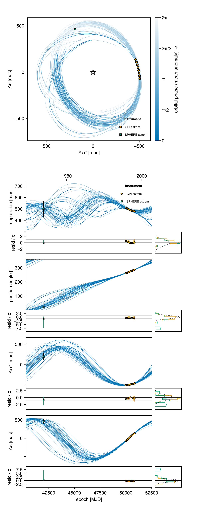
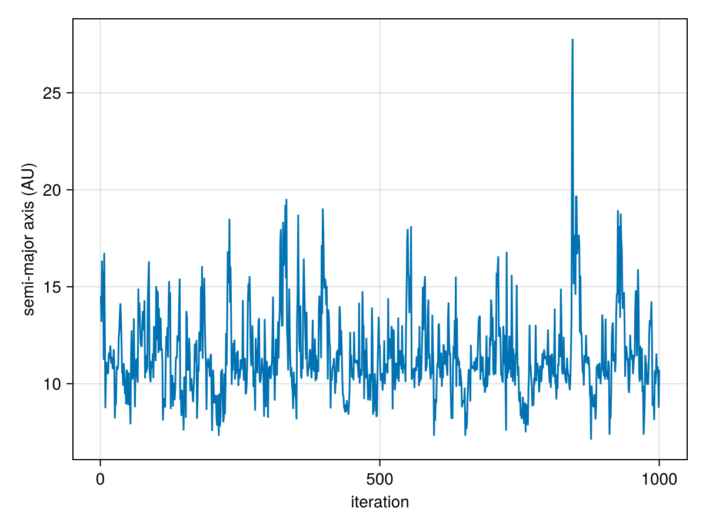
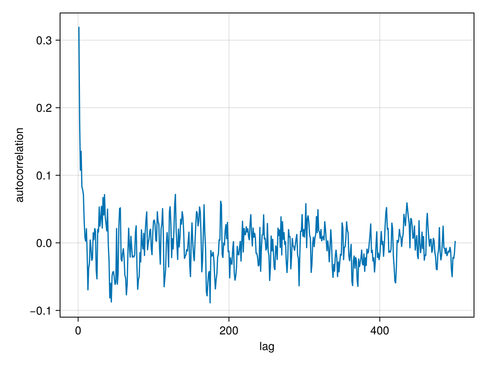
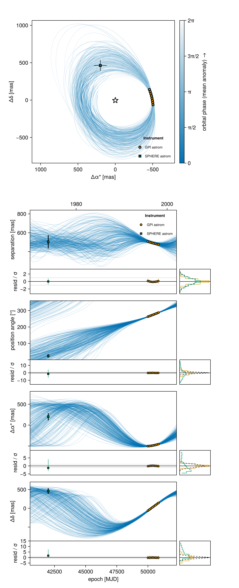
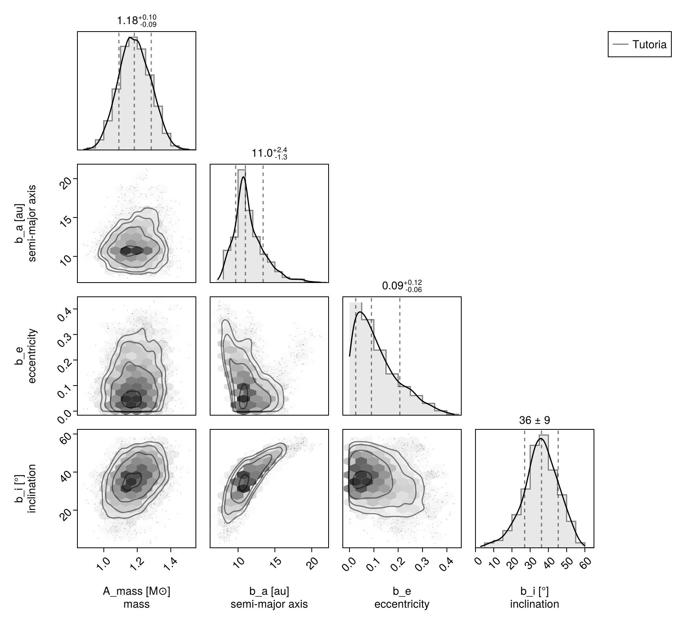
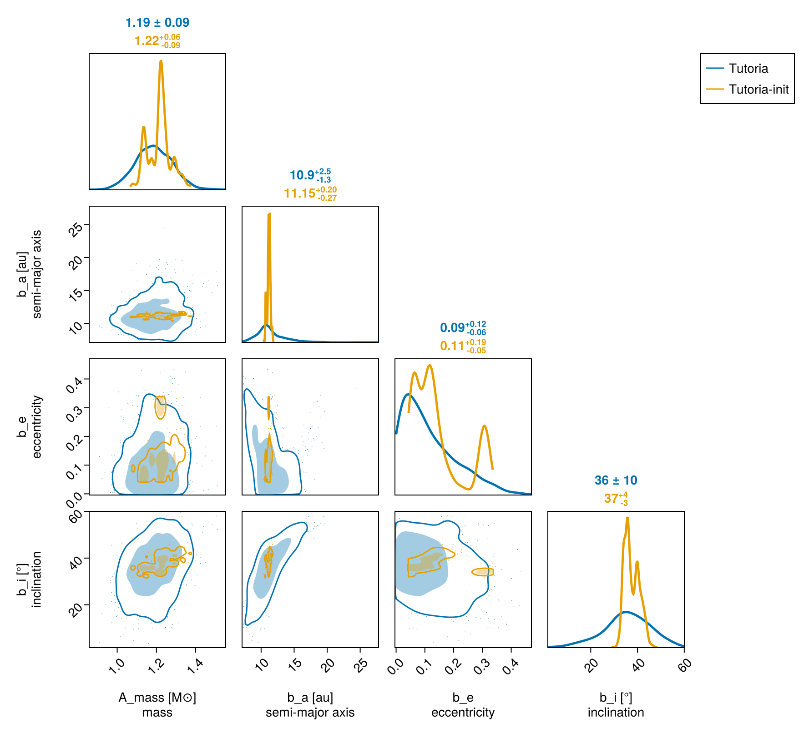

Basic Astrometry Fit
Here is a worked example of a one-planet model fit to relative astrometry (positions measured between the planet and the host star).
Start by loading the Octofitter and Distributions packages:
using Octofitter, DistributionsSpecifying the data
We will create an observation object to contain our relative astrometry data. We can specify this data in several formats. It can be listed in the code or loaded from a file (eg. a CSV file, FITS table, or SQL database). You can use any Julia table object.
astrom_dat_1 = Table(;
epoch= [50000, 50120, 50240, 50360,50480, 50600, 50720, 50840,], # MJD (days)
ra = [-505.764, -502.57, -498.209, -492.678,-485.977, -478.11, -469.08, -458.896,], # mas
dec = [-66.9298, -37.4722, -7.92755, 21.6356, 51.1472, 80.5359, 109.729, 138.651, ], # mas
# Tip! Type this as \sigma + <TAB key>!
σ_ra = [10.0, 10.0, 10.0, 10.0, 10.0, 10.0, 10.0, 10.0, ], # mas
σ_dec = [10.0, 10.0, 10.0, 10.0, 10.0, 10.0, 10.0, 10.0, ], # mas
cor = [0.0, 0.0, 0.0, 0.0, 0.0, 0.0, 0.0, 0.0, ]
)In Octofitter, epoch is always the modified Julian date (measured in days). If you're not sure what this is, you can get started by just putting in arbitrary time offsets measured in days.
In this case, we specified ra and dec offsets in milliarcseconds. We could instead specify sep (projected separation) in milliarcseconds and pa in radians. You cannot mix the two formats in a single RelAstromObs but you can create two different observation objects, one for each format, and add them both to your model:
astrom_dat_2 = Table(
epoch = [42000, ], # MJD
sep = [505.7637580573554, ], # mas
pa = [deg2rad(24.1), ], # radians
# Tip! Type this as \sigma + <TAB key>!
σ_sep = [70, ],
σ_pa = [deg2rad(10.2), ],
)Creating the bodies
We now create our model. In Octofitter, we specify models using a "probabilistic programming language". Quantities with a ~ are random variables. The distributions on the right hand sides are priors. You must specify a proper prior for any quantity which is allowed to vary. Quantities with an = are derived: constants, or fixed mathematical functions of the other variables.
A model is a flat list of bodies. The host star is a body, and so is the planet; what makes the planet a companion is about=A, which says that its variables parameterize an orbit about the star.
A = Body(
name="A",
variables=@variables begin
mass ~ truncated(Normal(1.2, 0.1), lower=0.1) # [M⊙]
end
)
planet_b = Body(
name="b",
about=A,
variables=@variables begin
mass = 0.0 # [M⊙] relative astrometry alone cannot measure it
a ~ Uniform(0, 100) # [AU]
e ~ Uniform(0.0, 0.5)
i ~ Sine() # [rad]
ω ~ UniformCircular() # [rad]
Ω ~ UniformCircular() # [rad]
θ ~ UniformCircular() # [rad] position angle at `epoch`
epoch = 50420.0 # [MJD] reference epoch for θ. Choose a date near your data.
end
)name: Try to give each body a short name consisting only of letters and/or trailing numbers. It is used to name that body's columns in the output chain (b_a, b_e, ...).
about: which body (or barycentre) this one orbits. Leave it off for the root of the hierarchy — exactly one body, normally the host star, must be unplaced. about=(A, b) would place a third body about the barycentre of A and b — a Jacobi chain — instead of about A alone. The two are different models, not two spellings of one; see Jacobi vs. astrocentric in the PlanetOrbits manual for which to pick.
variables: this body's variables. Three names are read specially — mass [M⊙], flux/flux_<band>, and any orbital element keyword — and everything else is an ordinary local you can use in later lines of the same block. The orbital elements come in groups; supply exactly one alternative from each:
| group | alternatives |
|---|---|
| size | a [AU] or P [days] |
| shape | (e, ω) or (secosω, sesinω) or (ecosω, esinω) |
| phase | tp or M0 + epoch or θ + epoch |
| orientation | i, Ω |
Here we used θ (the planet's position angle on the sky at epoch) to fix the phase, which is usually much better constrained by imaging data than the epoch of periastron.
The gravitating mass of an orbit is the total mass of the bodies it binds, computed from the model rather than declared. For this two-body system that is A.mass + b.mass; fixing b.mass = 0.0 makes A.mass the whole of it, which is what relative astrometry alone can constrain. Give the planet a real mass prior when your data can constrain it (radial velocity, absolute astrometry, or a second planet).
Priors can be any continuous univariate distribution from the Distributions.jl package. Many are supported, including Uniform, LogNormal, LogUniform, Sine, and Beta. See the section on Priors for more information. The variables can be specified in any order.
You can also hardcode a particular value for any parameter if you don't want it to vary. Simply replace eg. e ~ Uniform(0, 0.999) with e = 0.1. This = syntax works for arbitrary mathematical expressions and even functions. The = syntax also works to access variables from the system level, e.g. plx = system.plx.
You must specify a proper prior for any quantity which is allowed to vary. "Uninformative" priors like 1/x must be given bounds, and can be specified with LogUniform(lower, upper).
Make sure that variables like mass and eccentricity can't be negative. You can pass a distribution to truncated to prevent this, e.g. mass ~ truncated(Normal(1, 0.1),lower=0).
Creating the observations
Every observation says what it observes (target) and what it is measured against (ref). Relative astrometry of the planet with respect to the star is target=planet_b, ref=A:
astrom_obs_1 = RelAstromObs(astrom_dat_1; target=planet_b, ref=A, name="relastrom")
astrom_obs_2 = RelAstromObs(astrom_dat_2; target=planet_b, ref=A, name="relastrom2")Each observation must be given a name, which is used to label its own variables in the output chain.
ref names what the measurement is relative to, and it can be anything in the model: ref=A (the usual case, a companion measured against its host), ref=Barycentre (measured against the system barycentre), or ref=planet_b (one companion measured against another).
Advanced Options
You can group your data in different observation objects, each with their own instrument name. Each group can have its own platescale, northangle, and astrometric jitter variables for modelling instrument-specific systematics.
astrom_obs_1 = RelAstromObs(
astrom_dat_1;
target = planet_b,
ref = A,
name = "GPI astrom",
variables = @variables begin
jitter ~ Uniform(0, 10) # mas [optional]
northangle ~ Normal(0, deg2rad(1)) # radians of offset [optional]
platescale ~ truncated(Normal(1, 0.01), lower=0) # 1% relative platescale uncertainty
end
)
astrom_obs_2 = RelAstromObs(
astrom_dat_2;
target = planet_b,
ref = A,
name = "SPHERE astrom",
variables = @variables begin
jitter ~ Uniform(0, 10) # mas [optional]
northangle ~ Normal(0, deg2rad(1)) # radians of offset [optional]
platescale ~ truncated(Normal(1, 0.01), lower=0) # 1% relative platescale uncertainty
end
)Creating a system
Now we assemble the bodies and observations into a "system". Properties of the whole system are specified here, like parallax distance. For multi-planet systems, it makes sense to create shared variables here — for example a single inclination used by two planets.
sys = System(
name = "Tutoria",
bodies=[A, planet_b],
observations=[astrom_obs_1, astrom_obs_2],
variables=@variables begin
plx ~ truncated(Normal(50.0, 0.02), lower=0.1)
end
)The name of your system will be used for various output file names by default – we suggest naming it something like "PDS70-astrom-model".
The variables block works just like it does for bodies. Here, we provided the parallax distance to the system:
plx: Distance to the system expressed in milliarcseconds of parallax.
Which of plx, ra, dec, pmra, pmdec, rv, ref_epoch you define here chooses the reference frame. plx alone is what turns AU into milliarcseconds on the sky, and is all that relative astrometry needs. There is no basis= keyword any more.
Note that all observations live on the system, including ones about a single planet. They name their own references, so there is nothing left for per-planet attachment to express.
Prepare model
We now convert our declarative model into efficient, compiled code:
model = Octofitter.LogDensityModel(sys)LogDensityModel for System Tutoria of dimension 17 and 9 epochs with fields .ℓπcallback and .∇ℓπcallback
This type implements the julia LogDensityProblems.jl interface and can be passed to a wide variety of samplers.
Initialize starting points for chains
Run the initialize! function to find good starting points for the chain. You can provide guesses for parameters if you want to. Body variables are nested under bodies:
init_chain = initialize!(model) # No guesses provided, slower global optimization will be usedinit_chain = initialize!(model, (;
plx = 50,
bodies = (;
A = (; mass = 1.21),
b = (;
a = 10.0,
e = 0.01,
)
)
))[ Info: Initializing with 4 fixed parameters
┌ Info: Starting values not provided for all parameters! Guessing starting point using global optimization:
│ num_params = 13
└ num_fixed = 4
┌ Info: Found sample of initial positions
│ logpost_range = (-62.54028863400391, -50.29558771802385)
└ mean_logpost = -54.78222784797135Never initialize a value on the bounds of the prior. For example, exactly 0.00000 eccentricity is disallowed by the Uniform(0,1) prior.
Visualize the starting points
Plot the inital values to make sure that they are reasonable, and match your data. This is a great time to confirm that your data were entered in correctly.
using CairoMakie
octoplot(model, init_chain)
The starting points for sampling look reasonable!
The return value from initialize! is a "variational approximation". You can pass that chain to any function expecting a chain argument, like Octofitter.savechain or octocorner. It gives a very rough approximation of the posterior we expect.
Sampling
Now we are ready to draw samples from the posterior:
chain = octofit(model, iterations=1000)Chains MCMC chain (1000×36×1 Array{Float64, 3}):
Iterations = 1:1:1000
Number of chains = 1
Samples per chain = 1000
Wall duration = 4.05 seconds
Compute duration = 4.05 seconds
parameters = plx, A_mass, b_a, b_e, b_i, b_ωx, b_ωy, b_Ωx, b_Ωy, b_θx, b_θy, b_ω, b_Ω, b_θ, b_mass, b_epoch, GPI_astrom_jitter, GPI_astrom_northangle, GPI_astrom_platescale, SPHERE_astrom_jitter, SPHERE_astrom_northangle, SPHERE_astrom_platescale
internals = n_steps, is_accept, acceptance_rate, hamiltonian_energy, hamiltonian_energy_error, max_hamiltonian_energy_error, tree_depth, numerical_error, step_size, nom_step_size, is_adapt, loglike, logprior, logpost, tree_depth, numerical_error
Use `describe(chains)` for summary statistics and quantiles.
You will get an output that looks something like this with a progress bar that updates every second or so. You can reduce or completely silence the output by reducing the verbosity value down to 0 from a default of 2 (or get more info with verbosity=4).
Once complete, the chain object will hold the posterior samples. Displaying it prints out a summary table like the one shown above.
For a basic model like this with few epochs and well-specified uncertainties, sampling should take less than a minute on a typical laptop.
Sampling can take much longer when you have measurements with very small uncertainties (e.g. VLTI-GRAVITY).
Diagnostics
The first thing you should do with your results is check a few diagnostics to make sure the sampler converged as intended.
A few things to watch out for: check that you aren't getting many numerical errors (ratio_divergent_transitions). This likely indicates a problem with your model: either invalid values of one or more parameters are encountered (e.g. the prior on semi-major axis includes negative values) or that there is a region of very high curvature that is failing to sample properly. This latter issue can lead to a bias in your results.
One common mistake is to use a distribution like Normal(10,3) for semi-major axis. This left tail of this distribution includes negative values, and our orbit model is not defined for negative semi-major axes. A better choice is a truncated(Normal(10,3), lower=0.1) distribution (not including zero, since a=0 is not defined).
Next, you can make a trace plot of different variabes to visually inspect the chain:
using CairoMakie
lines(
chain["b_a"][:],
axis=(;
xlabel="iteration",
ylabel="semi-major axis (AU)"
)
)
And an auto-correlation plot:
using StatsBase
using CairoMakie
lines(
autocor(chain["b_e"][:], 1:500),
axis=(;
xlabel="lag",
ylabel="autocorrelation",
)
)
This plot shows that these samples are not correlated after only about 5 iterations. No thinning is necessary.
To confirm convergence, you may also examine the rhat column from chains. This diagnostic approaches 1 as the chains converge and should at the very least equal 1.0 to one significant digit (3 recommended).
Finaly, you might consider running multiple chains. Simply run octofit multiple times, and store the result in different variables. Then you can combine the chains using chainscat and run additional inter-chain convergence diagnostics:
using MCMCChains
chain1 = octofit(model)
chain2 = octofit(model)
chain3 = octofit(model)
merged_chains = chainscat(chain1, chain2, chain3)
gelmandiag(merged_chains)Gelman, Rubin, and Brooks diagnostic
parameters psrf psrfci
Symbol Float64 Float64
plx 1.0000 1.0012
A_mass 0.9998 0.9999
b_a 1.0044 1.0092
b_e 1.0031 1.0092
b_i 1.0010 1.0021
b_ωx 1.0024 1.0089
b_ωy 1.0180 1.0631
b_Ωx 1.0512 1.1711
b_Ωy 1.0274 1.0957
b_θx 1.0015 1.0029
b_θy 1.0042 1.0140
b_ω 1.0138 1.0482
b_Ω 1.0368 1.1246
b_θ 1.0023 1.0034
b_mass NaN NaN
b_epoch NaN NaN
GPI_astrom_jitter 1.0011 1.0032
GPI_astrom_northangle 1.0031 1.0035
GPI_astrom_platescale 1.0012 1.0049
SPHERE_astrom_jitter 1.0000 1.0008
SPHERE_astrom_northangle 0.9999 1.0004
SPHERE_astrom_platescale 1.0002 1.0019
This will check that the means and variances are similar between chains that were initialized at different starting points.
Analysis
As a first pass, let's plot a sample of orbits drawn from the posterior. The function octoplot is a conveninient way to generate a multi-panel plot of the orbits and every data channel in the model:
using CairoMakie
octoplot(model,merged_chains)
This function draws orbits from the posterior and displays them in a plot. Any astrometry points are overplotted.
You can control how many orbits are drawn, the figure scale, and which panels appear. See octoplot for more details.
Pair Plot
A very useful visualization of our results is a pair-plot, or corner plot. We can use the octocorner function and our PairPlots.jl package for this purpose:
using CairoMakie
using PairPlots
octocorner(model, merged_chains, small=true)
Remove small=true to display all variables.
In this case, the sampler was able to resolve the complicated degeneracies between eccentricity, the longitude of the ascending node, and argument of periapsis.
Working with the fitted orbits
Chain columns are named <body>_<variable> for body variables, <observation>_<variable> for observation variables, and are unprefixed for system variables:
sma_planet_b = chain["b_a"] # a (samples × chains) matrixTo evaluate the orbits themselves, rebuild the whole PlanetOrbits.System for a draw and query it. Every observable takes (solution, target, reference):
posys = construct_system(model, chain, 1) # draw #1
traj = orbitsolve(posys, [mjd("2025-01-01"), mjd("2030-01-01")])
raoff(traj[1], :b, :A), decoff(traj[1], :b, :A) # [mas](503.61517311179733, 51.26308427124763)Saving your chain
You can save your chain in FITS table format by running:
Octofitter.savechain("mychain.fits", chain)You can load it back via:
chain = Octofitter.loadchain("mychain.fits"; model)Passing model is recommended: loadchain then checks the chain's column names against the model, and errors with a rename hint instead of silently giving you missing values.
Saving your model
You may choose to save your model so that you can reload it later to make plots, etc:
using Serialization
serialize("model1.jls", model)Which can then be loaded at a later time using:
using Serialization
using Octofitter # must include all the same imports as your original script
model = deserialize("model1.jls")Serialized models are only loadable/restorable on the same computer, version of Octofitter, and version of Julia. They are not intended for long-term archiving. For reproducibility, make sure to keep your original model definition script.
Comparing chains
We can compare two different chains by passing them both to octocorner. Let's compare the init_chain with the full results from octofit:
octocorner(model, chain, init_chain, small=true)